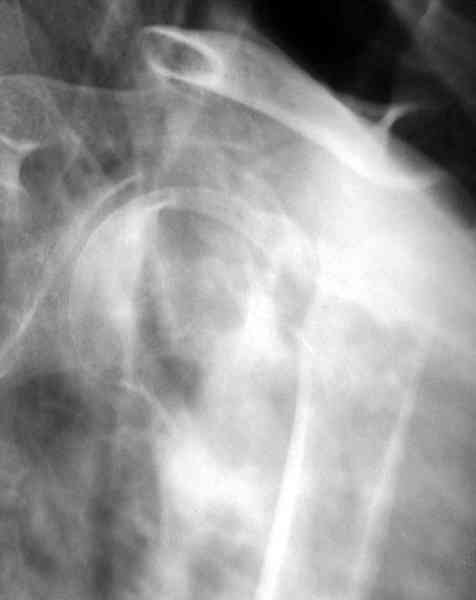
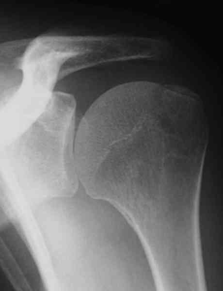
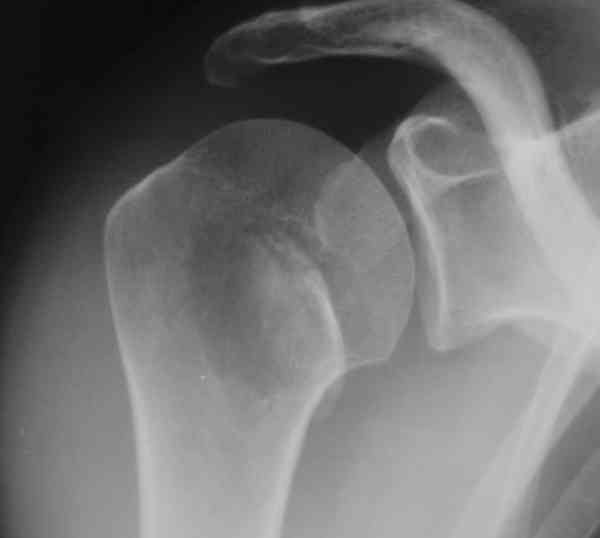
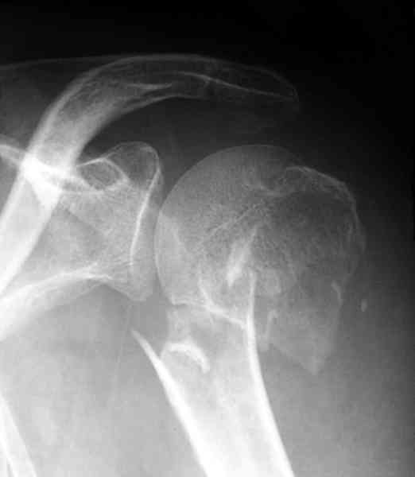
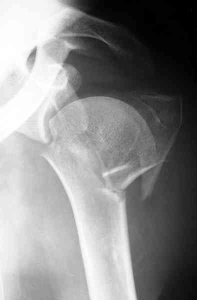
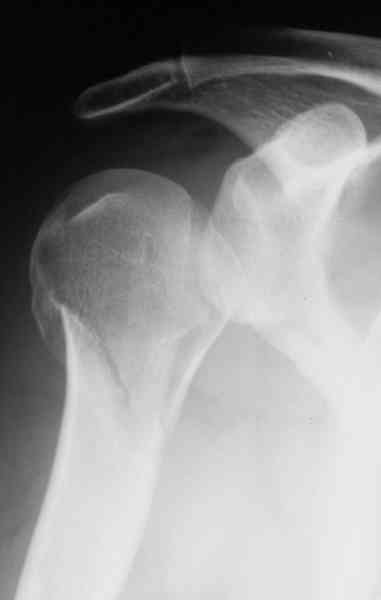
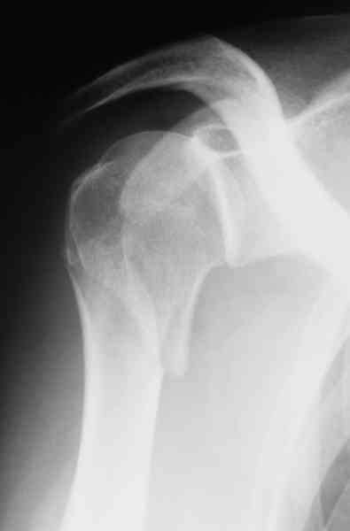
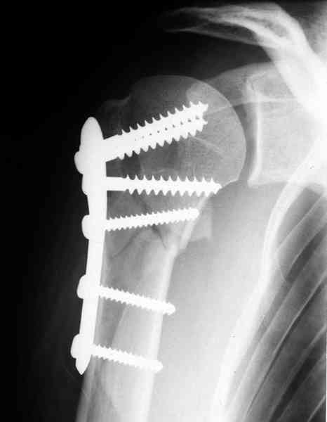

Bienvenue Sur Medical Education
Fractures : extrémité supérieure humérus
Spécialité : traumatologie /
Points importants
-
Ce sont des fractures relativement fréquentes surtout chez le sujet âgé. Elles sont rares en pratique sportive, sauf au cours des accidents de ski où elles intéressent le sujet jeune
-
Pas de piège, sauf fracture du trochin (passe souvent inaperçue en urgence) et fracture du trochiter lorsqu'elles ne sont pas déplacées
-
Il faut de bonnes radiographies pour faire un bon diagnostic
-
Jamais d'immobilisation prolongée coude au corps car le risque de raideur irrécupérable est majeur (+++)
Présentation clinique / CIMU
SIGNES FONCTIONNELS
-
Douleur
-
Impotence fonctionnelle du membre
CONTEXTE
Présentation clinique / CIMU
SIGNES FONCTIONNELS
- Douleur
- Impotence fonctionnelle du membre
CONTEXTE
Terrain
- Fréquent chez le patient âgé
Circonstances de survenue
- Accidents de ski (fréquent)
- Accidents domestiques (sujets âgés +++)
EXAMEN CLINIQUE
- Examen clinique soigneux à la recherche de complications vasculo-nerveuses éventuelles
- La mobilisation de l'épaule n'a aucun intérêt surtout si elle est douloureuse
Signes paracliniques
IMAGERIE
-
Bilan radiologique correct de débrouillage : face stricte enfilant parfaitement l'interligne (double obliquité), profil de Lamy ou profil transthoracique
 _822 Profil trans-thoracique qui montre un déplacement important de la fracture
- Les classifications sont très nombreuses. Nous retiendrons la classification de Duparc qui a l'avantage d'être simple et de compréhension facile.
Fractures extra-articulaires
-
Fractures tuberculaires :
-
tubercule majeur ou trochiter :
-  _813 Fracture isolée du trochiter à peine déplacée
- parfois isolée
- parfois associée à une luxation antéro-interne de l'épaule (20 à 40%)
- fragment plus ou moins volumineux (avulsion de la coiffe)
- passe parfois inaperçue en urgence lorsque la fracture n'est pas déplacée
-
tubercule mineur ou trochin :
-  _814 Fracture isolée du trochin
- très rare
- souvent méconnue
- fragment attiré en dedans par le sub-scapulaire
-
tubercule majeur ou trochiter :
-
Fractures sous-tuberculaires ou du col chirurgical de l'humérus :
-
fractures sous tuberculaires isolées :
-  _815 Fracture sous-tuberculaire déplacée de l'extrémité supérieure de l'humérus
- plus ou moins hautes
- plus ou moins engrenées
- peu de risque de nécrose de la tête humérale
-
fractures sous-tuberculaires avec fracture du tubercule majeur ou mineur :
- la fracture est plus ou moins déplacée
- risque plus ou moins important de nécrose de la tête humérale (lésion de l'artère antéro-externe)
-
fractures sous tuberculaires isolées :
Fractures articulaires
-
Fractures du col anatomique :
- exceptionnelles
- plus ou moins engrenées
- risque important de nécrose de la tête de l'humérus
-
Les fractures céphalo-tuberculaires (ou céphalo-tubérositaires) :
- les plus fréquentes des fractures articulaires
-
plus ou moins déplacées
-  _816 Fracture céphalo-tubérositaire déplacée de l'extrémité supérieure de l'humérus
- risque majeur de nécrose de la tête humérale (plus de 30%)
- type I à IV en fonction du déplacement
Fractures-luxations
- Terme imprécis
-
Il faut préciser :
-
la direction : antérieure ou postérieure
-  _817 Fracture-luxation postérieure de l'extrémité supérieure de l'humérus
-  _818 Fracture-luxation postérieure de l'extrémité supérieure de l'humérus
- et le type : col chirurgical ou col anatomique
-
la direction : antérieure ou postérieure
Traitement
AVANT RADIOGRAPHIES
-
Traitement antalgique fonction de l'intensité douloureuse mesurée par l'EN ou l'EVA (voire ALR et MEOPA)
-
Immobiliser l'épaule dans une écharpe simple
APRES RADIOGRAPHIES
-
Le médecin urgentiste peut traiter un grand nombre de ces fractures car les indications chirurgicales sont rares (15 à 20%). Cependant il faut connaître les délais de consolidation, et les risques éventuels de déplacement secondaire
Fractures isolées du trochiter
-
Non déplacées : traitement fonctionnel :
- immobilisation coude au corps pendant 3 à 8 jours (pas plus, car risque de capsulite rétractile qui mettra plusieurs mois à guérir)
_879
- - -
Coude au corps
Fractures isolées du trochin
Fractures sous-tuberculaires
Fractures céphalo-tuberculaires

_819
Ostéosynthèse par plaque vissée d'une fracture déplacée de l'extrémité supérieure de l'humérus
Fractures-luxations Auteur(s) : Jean-Jacques BANIHACHEMI, Dominique SARAGAGLIA
Surveillance
Devenir / orientation
CRITERES D'ADMISSION
CRITERES DE SORTIE
ORDONNANCE DE SORTIE
RECOMMANDATOINS DE SORTIE
Bibliographie